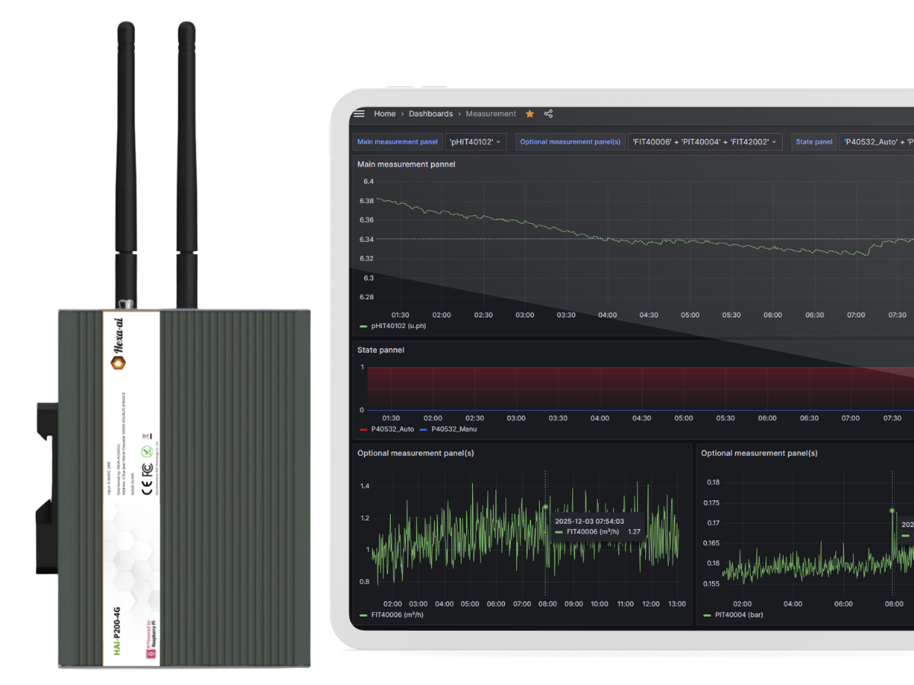
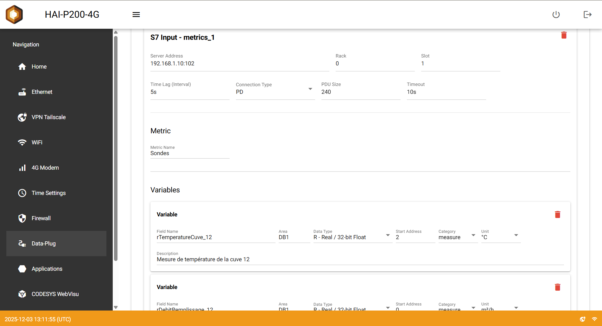
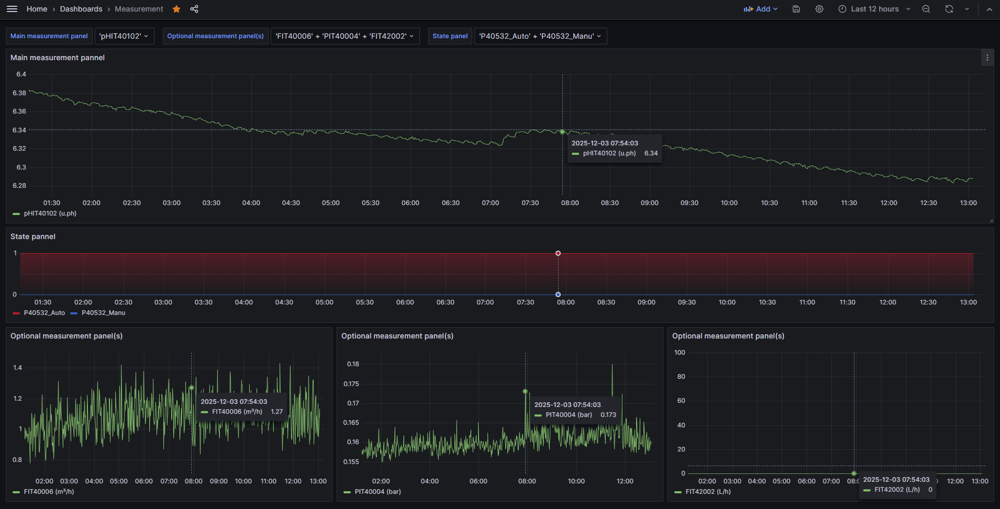
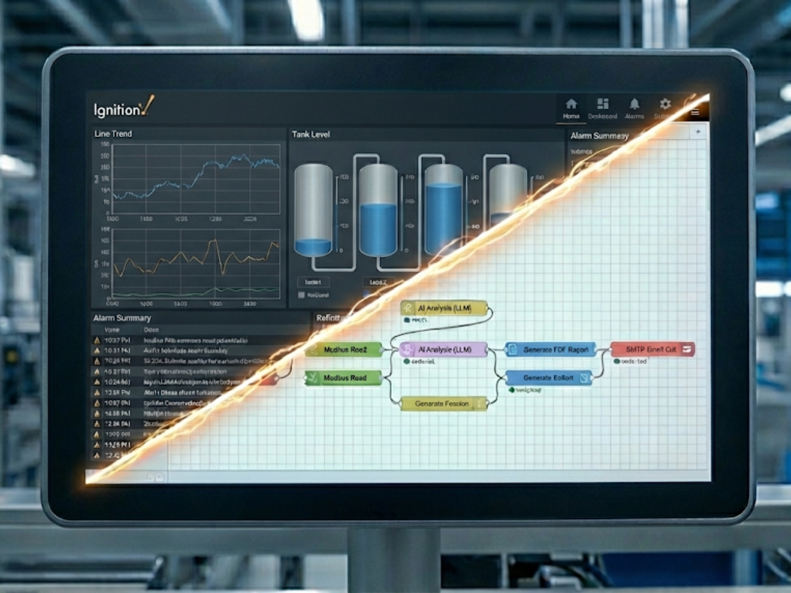
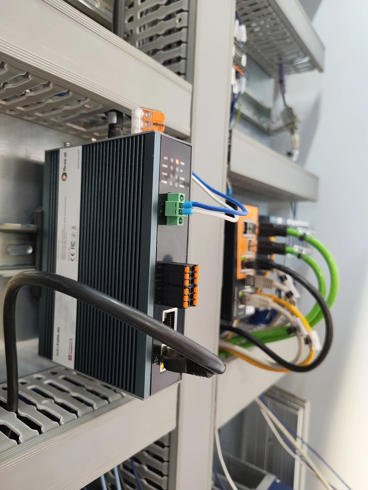

La première Gateway IoT industrielle qui combine la simplicité d'une solution propriétaire ("Boîte Noire") et la puissance illimitée de l'Open Source.

Pourquoi les intégrateurs et exploitants changent-ils leurs modems standards pour le HAI-P200 ?
La réponse tient en trois défis quotidiens...
Entre les abonnements prohibitifs et la complexité des VPN, l'équation est difficile. Vous cherchez la sécurité sans subir une double dépendance (Service Cloud + Matériel propriétaire).
On parle d'IA, mais le terrain est plus cru : on peine déjà à collecter une donnée fiable. Vous perdez du temps à construire la "tuyauterie" au lieu de vous concentrer sur la valeur ajoutée.
La complexité technique (Linux, Réseau, Code) ne doit plus limiter vos ambitions. Ce projet ne devrait pas être abandonné car la marche informatique semble trop haute pour vos équipes.
Nous avons conçu le HAI-P200 pour éliminer ces frictions.
Voici comment nous transformons des jours de configuration en minutes d'installation.

Fini les fichiers JSON. Notre Configurateur Graphique unifie vos protocoles (S7, Modbus, OPC-UA).
Le HAI-P200 organise vos données. La stack pré-installée (Telegraf + SQLite + Grafana) génère les visualisations automatiquement.


Pour les besoins avancés, le HAI-P200 est une véritable Edge Gateway multi-compétence. Deux moteurs puissants sont pré-conteneurisés :
Déjà installé et conteneurisé. Saisissez simplement votre licence pour déverrouiller l'application complète : créez vos écrans de supervision locale et synchronisez-les avec un serveur central.
Pour l'agilité : connectez des API, formatez des données ou générez des rapports PDF automatisés via IA.

Application de télémaintenance sur machine d'assemblage
Intégration sur Rail-DIN au cœur des équipements.
Besoin d'une unité de test pour demain ou d'une flotte pour l'année prochaine ?
Décrivez simplement votre besoin.
Nous vous envoyons un devis incluant le PC et les options adaptées (Antennes, Stockage, Alimentation...).